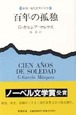

BookWeb和書検索結果詳細
新潮・現代世界の文学
百年の孤独
ISBN:
4105090011
出版社:
新潮社
著者:
ガブリエル・ガルシア・マルケス 鼓直
1983/10
NDC:
963
20 cm （３１４ｐ）
\1,942
蜃気楼の村マコンドの創立から全盛さらには凋落への一大叙事詩と、村の開拓者ブエンディーア
家一族の孤独の世界。
南アメリカ人の孤独を見事に、最も完璧に、しかもパセティックに描き出した最高の傑作。
注文冊数：
E-mail:webmaster@kinokuniya.co.jp
Copyright (C) 1996 Kinokuniya Company, LTD.